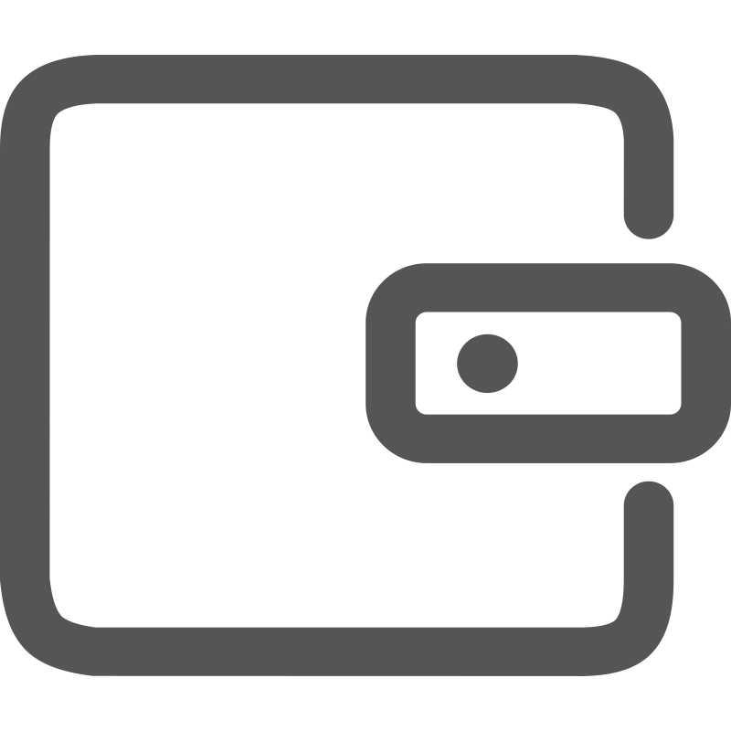

CavBot Docs
Help for every stage of your website.
Account and profile
Workspace
Website signals
CavAi
Developers
Developer tools
Security
Integrations

Help for every stage of your website.

Start here
CavBot is a website intelligence platform. We bring clarity to what happens after launch — helping every digital experience stay reliable, resilient, and ready to recover.
Fetch the complete documentation index at: https://cavbot.io/docs/llms.txt
Use this file to discover available CavBot pages before exploring further.
Websites are no longer static pages. They are live systems made of routes, scripts, search visibility, user sessions, forms, dashboards, embedded tools, and production behavior. CavBot gives those systems a command layer.
Once a website is connected, CavBot can begin organizing signals around the site profile: broken routes, JavaScript errors, SEO structure, accessibility snapshots, route behavior, and workspace context.
CavBot does not replace your analytics stack. It sits beside it as an operational intelligence layer: a place to see what needs attention, understand why it matters, and move toward the next action.
CavBot helps you monitor and understand a website after it is live. The first setup flow is simple:
Every website belongs to a workspace, and every workspace can contain one or more site profiles. A site profile represents a real website origin, such as https://example.com.
Use CavBot when the website is important enough that broken pages, weak metadata, route loops, or client-side errors should not sit unseen. It is built for post-launch work: the practical stage where a site has real visitors, real routes, and real consequences when something breaks.
CavBot is especially useful when a team needs one place to understand site health before deciding what to fix. Analytics can show traffic and conversion. CavBot focuses on operational signals: what changed, what broke, what is missing, and what needs review next.
CavBot starts with a site profile. The profile gives CavBot a stable place to organize signals from the website. After the snippet is installed, CavBot can receive events from the browser and connect them to the selected project and site.
CavBot becomes more useful when the site is active and receiving real user traffic, but the setup can be verified immediately with test visits and basic route checks.
The site profile is the anchor. The Analytics v5 snippet sends browser-side activity to CavBot, including page visits, route changes, runtime errors, and selected context about the active site. CavBot stores those signals under the workspace and connects them to modules such as Dashboard, Errors, Routes, SEO, A11y, Reports, and 404 Recovery.
CavAi can then use the workspace and site context to explain what the signals mean. The goal is not to flood the team with raw events. The goal is to help the team understand which issue deserves attention and why.
| Situation | Start with | Goal |
|---|---|---|
| You are new to CavBot. | Create your account. | Open a workspace and prepare your first site profile. |
| You already have a live website. | Add your first website. | Register the canonical site origin inside CavBot. |
| You want live browser signals. | Install the snippet. | Send page views, route changes, errors, and snapshots to CavBot. |
| You want to review health. | Open the dashboard. | Read the first signals and check priority modules. |
If you are setting up CavBot for the first time, start with the account, then add the website, then install the snippet. Do not start with reports or CavAi until the workspace has a real site profile. Those surfaces become more useful once CavBot has a site to reference.
If you already have a workspace and a saved site, jump directly to the snippet. After the first browser visit, open the dashboard and confirm the selected site is receiving signals.
A workspace owns one or more site profiles. A site profile represents a real website origin. Analytics v5 sends signals from that website into the profile. Modules read those signals and show focused views for common operating work. CavAi can use the same context when you ask questions about the website.
Your CavBot account gives you access to the app, workspaces, sites, reports, and CavAi features. Use an email address you can keep long term, especially if the workspace will belong to a business or team.
Confirm that the owner account can access billing, workspace settings, site setup, and the dashboard. Once the owner account is stable, invite teammates with roles that match their work. Editors can help with site operations. Admins should be limited to people who can manage access and sensitive settings.
A site profile tells CavBot which website belongs to the workspace. Use the public origin of your website, not a random route.
Correct examples:
https://example.com
https://www.example.com
https://app.example.comAvoid adding full paths as the main site origin:
https://example.com/pricing
https://example.com/blog/post-name
https://example.com?ref=testAfter the site is saved, CavBot can use it across dashboards, reports, route intelligence, SEO checks, error views, and CavAi workspace context.
If the workspace has more than one site profile, choose the main production website as the primary site. This keeps dashboard views, reports, and CavAi context pointed at the website the team reviews most often.
The Analytics v5 snippet connects your live website to CavBot. Install it near the end of the page body or through the custom code area of your website platform.
<script>
window.CAVBOT_API_URL = "https://app.cavbot.io/api/embed/analytics";
window.CAVBOT_PROJECT_KEY = "YOUR_PROJECT_KEY";
window.CAVBOT_SITE_ID = "YOUR_SITE_ID";
</script>
<script src="/cavai/cavai-analytics-v5.js" defer></script>
Replace YOUR_PROJECT_KEY and YOUR_SITE_ID with the values shown in your CavBot workspace.
After installation, visit the website in a browser, move through a few routes, then open CavBot to confirm that signals are arriving.
On custom sites, place the configuration script and Analytics v5 script on every production page. On website builders, use the global custom code area when available. On storefronts and apps, install it in the shared layout so route changes and page visits are recorded consistently.
Keep this check short. The first goal is proof that the account, workspace, site, snippet, and dashboard are connected. Deeper review can happen after the site has collected real activity.
CavBot Analytics v5 is the browser-side signal layer for CavBot. It connects a live website to a CavBot site profile so the platform can understand page visits, route changes, runtime errors, recovery moments, and the basic context needed to review site health.
Add the configuration values from your CavBot workspace, then load the Analytics v5 script once on the site. The exact placement depends on your website platform, but the snippet should be present on every production page you want CavBot to observe.
<script>
window.CAVBOT_API_URL = "https://app.cavbot.io/api/embed/analytics";
window.CAVBOT_PROJECT_KEY = "YOUR_PROJECT_KEY";
window.CAVBOT_SITE_ID = "YOUR_SITE_ID";
</script>
<script src="/cavai/cavai-analytics-v5.js" defer></script>Events are named actions that help CavBot understand what happened on the website beyond a page view. Use them for moments your team cares about: form submissions, checkout starts, pricing clicks, sign-up attempts, recovery actions, or feature interactions.
Send an event when the action changes how the site should be understood. A normal page view does not need a custom event. A visitor clicking a primary call to action, failing a form step, opening a checkout, or using a recovery link is worth recording because it gives CavBot more context.
signup_started, pricing_cta_clicked, checkout_opened.window.CavBot?.track?.("pricing_cta_clicked", {
plan: "pro",
route: window.location.pathname
});Useful context is specific but limited. A plan name, route, button label, form step, or recovery target can help. Avoid sending sensitive information, passwords, payment details, private messages, or anything the team does not need to operate the site.
Summary is the read layer for current CavBot results. It gives a team or tool a compact view of the selected site, including dashboard state, route health, recent issues, and the operational context CavBot has already organized.
A summary should be treated as a snapshot. It helps answer “what does CavBot currently know about this site?” It should not replace detailed review inside the dashboard, reports, or individual signal modules when a fix is being planned.
CavAi v3 is the assistant layer inside CavBot. It helps explain website signals, summarize workspace context, draft next steps, and answer questions about the site or project without forcing the team to read every raw signal first.
Ask CavAi with the site and goal in mind. “What should I review first for this site?” is better than “what is wrong?” A good question gives CavAi a clear task: explain, compare, summarize, draft, or prioritize.
Summarize the current issues for this site and tell me what to check first.
Explain why this route keeps showing up in recovery reports.
Turn the latest dashboard signals into a short status update.Assistant memory is the project context CavAi can use when responding. It helps the assistant remember stable facts about a workspace, such as the site purpose, important routes, team preferences, and recurring operational concerns.
Do not store passwords, private keys, payment data, sensitive customer information, or temporary details that will become wrong quickly. Memory should make CavAi more useful without turning it into a place for secrets.
Project context should stay accurate. When a site changes, update the relevant memory. If a launch note is no longer useful, remove it or replace it with the current state.
Agent workflows are repeatable tasks that use CavBot context to help with site operations. They are useful when a team asks the same kind of question often: review a route, summarize a launch, check a dashboard state, prepare a report, or draft next steps.
A strong workflow has a clear input, a clear output, and a clear stopping point. Avoid broad prompts like “fix my website.” Use specific tasks like “review the pricing route signals and list the first three checks.”
Workflows can help prepare decisions, but sensitive actions should still be confirmed by a person. Treat the workflow result as a structured recommendation, not an automatic approval.
404 Arcade gives a broken page a better recovery moment. Instead of leaving visitors on a dead end, a site can show an interactive game or recovery surface while guiding the visitor back to a useful route.
Use 404 Arcade when a site has public routes that may be mistyped, moved, outdated, or linked from old campaigns. It is not a replacement for fixing broken links. It is a recovery layer for visitors who still reach a missing page.
After installing 404 Arcade, review whether visitors continue to another page, repeat the missing route, or leave. The goal is to protect the path and then repair the source of the broken route.
The CavBot Badge is a compact trust marker that can appear on a website when CavBot is connected. It gives visitors a visible CavBot presence without taking over the page.
Use the badge in low-friction places such as a footer, support surface, status area, or bottom corner. It should not block content, cover important buttons, or compete with the main page action.
<link rel="stylesheet" href="https://cdn.cavbot.io/sdk/ui/v1/cavbot-badge-inline.css">
<span data-cavbot-badge data-cavbot-badge-inline data-cavbot-badge-theme="auto"></span>CavBot Head is a compact visual component for product moments where a small CavBot presence is useful. It can support onboarding, empty states, status surfaces, or guided moments without requiring a full assistant panel.
<link rel="stylesheet" href="https://cdn.cavbot.io/sdk/ui/v1/cavbot-head-orbit.css">
<div data-cavbot-head-orbit></div>Keep the component small and leave enough spacing around it. It should support the message on the page, not distract from the task.
CavBot Body is the larger CavBot visual presence for guided product moments. Use it when the page needs a stronger assistant identity, such as onboarding, a launch state, a recovery screen, or a branded support moment.
<link rel="stylesheet" href="https://cdn.cavbot.io/sdk/ui/v1/cavbot-full-body.css">
<div data-cavbot-full-body></div>Use CavBot Body with restraint. It should be reserved for guided moments where the visitor needs orientation, recovery, or support.
Once the first setup is working, review one module at a time. Start with the dashboard for the broad view, then move into errors, routes, SEO, accessibility, or 404 recovery depending on what the site needs first.
Tell us if this docs section answered what you needed.